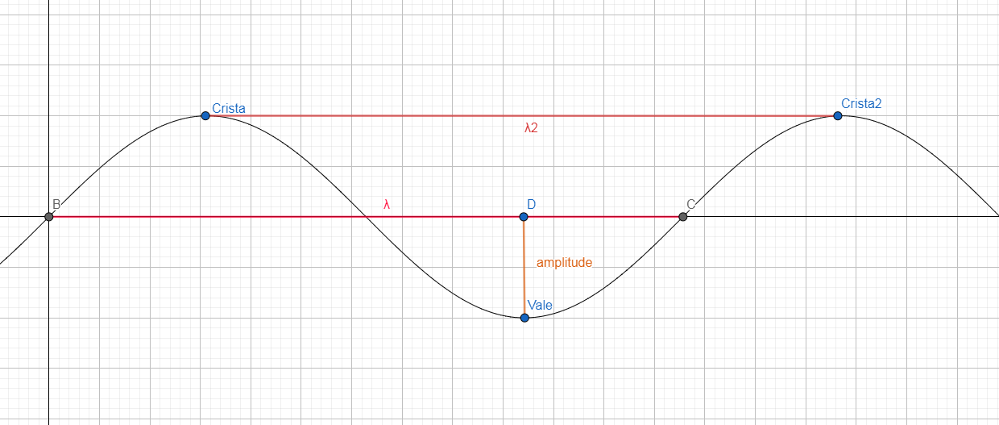
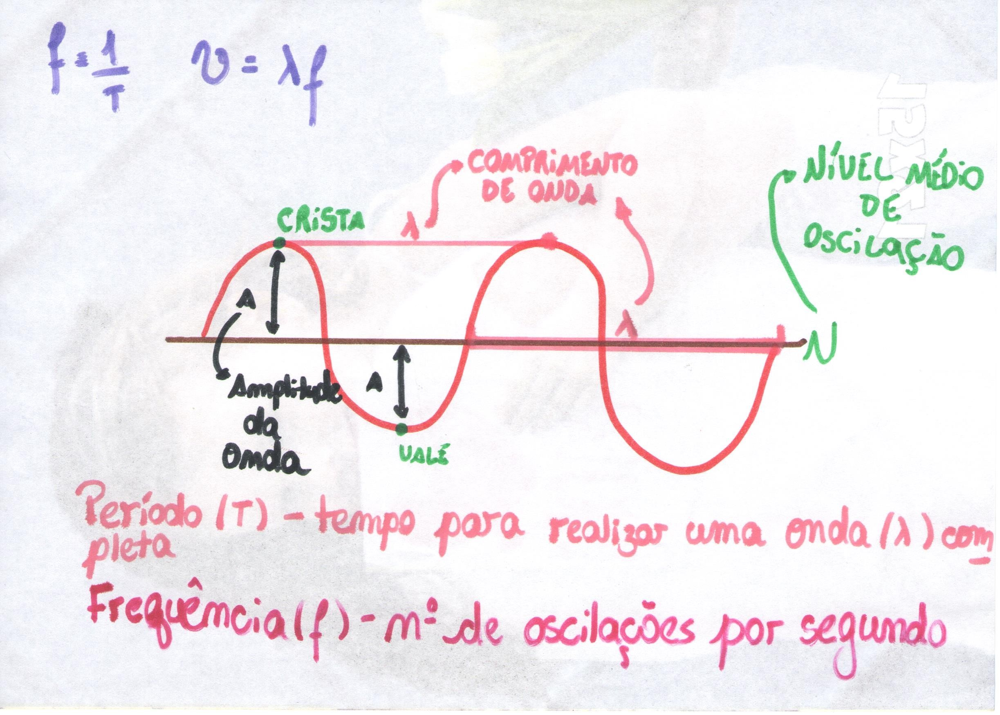

Sumário
Elementos principais de uma onda
Ao estudar ondulatória, nos deparamos com diversos conceitos, além dos já vistos no tópico anterior. Para uma melhor organização nos seus estudos, decidimos então criar um tópico específicos para todos estes elementos, podendo então “dar nome aos bois”. Vamos lá? Para representar graficamente, pode-se utilizar o conceito de onda unidimensional, como a perturbação de uma corda, como no exemplo abaixo:

Imagem feita no Geogebra
Em todo gráfico de uma onda, encontramos os seguintes elementos:
- Crista: Pico mais alto de uma onda. É a perturbação máxima positiva.
- Vale: Pico mais baixo de uma onda. É a perturbação máxima negativa.
- Comprimento de onda: Representado pela letra grega λ, é a distância que a onda percorre durante uma oscilação completa. Em outras palavras, é o “tamanho” de uma onda. Pode ser medida entre o início e o fim de uma oscilação ou entre duas cristas, como na figura, ou ainda entre dois vales.
- Nível médio de oscilação: Normalmente trata-se do eixo X do gráfico. É a perturbação central. A distância entre o nível médio e uma crista é a mesma que a distância entre o nível médio e um vale de uma mesma onda.
- Amplitude de onda: Pode ser representada pela letra A. É a distância entre o nível médio de oscilação e uma crista, ou um vale.
Com estes elementos, conseguimos denominar novos conceitos. São eles: período,
frequência e velocidade de uma onda.
-
Período de uma onda (T): Duração de uma oscilação (λ) completa.
Considerando T como o período, N como o número de ondas e Δt como o intervalo de tempo em segundos, temos:
- Frequência de uma onda (f): É o número de oscilações (λ) por segundo. Considerando f como a frequência, N como o número de ondas e Δt como o intervalo de tempo em segundos, temos:
No Sistema Internacional, a frequência é medida em Hertz (Hz). Logo, deve-se considerar outras formas de calcular esta grandeza. Assim, considerando s como segundos, temos:
Observando a relação entre frequência e período, é importante estabelecer novas relações, como as abaixo:
-
Velocidade de uma onda (v): É a distância percorrida por uma oscilação em um determinado
tempo. Em outras palavras, são quantos metros a onda avança por segundo.
Considerando v como a velocidade, Δd como a distância percorrida Δt como o intervalo de tempo em segundos, temos (sim, é aquela fórmula que você usa desde o início de seus estudos de física!):
OBS: Equação Fundamental da Ondulatória
A equação fundamental da ondulatória é válida para todos os tipos de onda. Aprofundando os estudos
da velocidade de uma onda, encontra-se uma relação, onde a velocidade é descrita como a razão entre
o comprimento de onda e o período, como a equação abaixo:
Como visto anteriormente, sabe-se que o período é um sobre o valor da frequência, obtendo assim a Equação Fundamental da Ondulatória:
(considerando v como a velocidade, λ como o comprimento de onda e f como a frequência).
RESUMÃO
Chegou a hora de fazer o Resumão! Para isso, aqui vão algumas dicas para você fazer o seu de forma completa e saber tudo sobre os elementos principais de uma onda:
- Entender a teoria por trás das equações é fundamental para você conseguir aplicá-las. Logo, procure sempre compreender cada elemento da representação gráfica.
- Algumas equações estão relacionadas. Logo, caso você esqueça de alguma, tente relacionar com outra que você já saiba.
- O auxílio de um simples desenho na resolução de exercícios pode resolver grandes problemas. Por isso, nosso resumão de hoje é um desenho que retrata todos os elementos principais de uma onda e suas equações.

Resumo dos elementos de uma onda feito à mão
Refêrencias
PIETROCOLA, Maurício; POGIBIN, Alexander; ANDRADE, Renata; ROMERO, Talita Raquel. Física: Em Contextos. 1. ed. São Paulo: Editora do Brasil, 2016. 288 p.